Data Transmission
27 pieces from the deep archive.
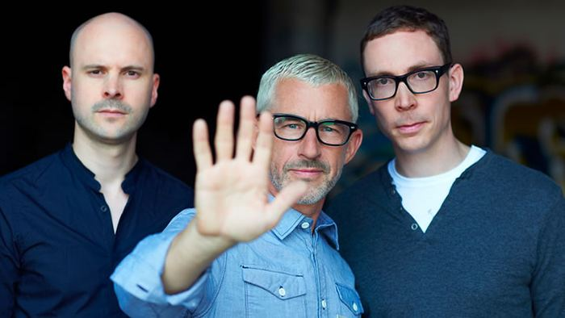
Above & Beyond talk albums: “We need each other, it’s almost like a marriage”
2 February 2015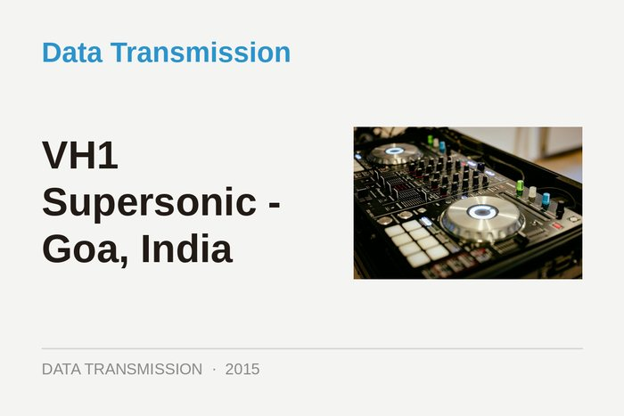
VH1 Supersonic - Goa, India
6 January 2015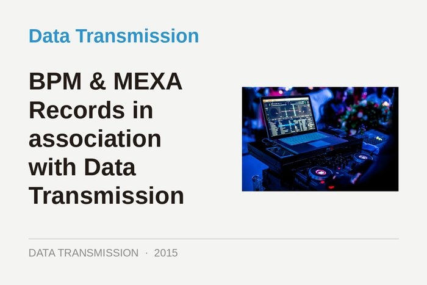
BPM & MEXA Records in association with Data Transmission
6 January 2015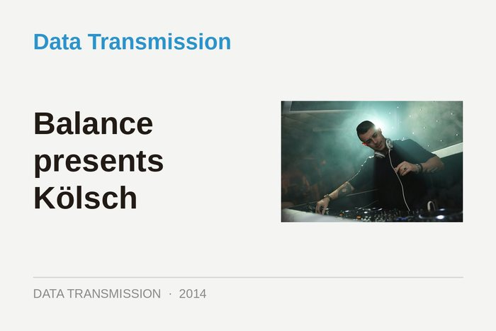
Balance presents Kölsch
22 December 2014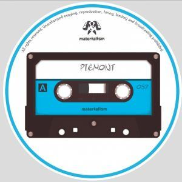
Piemont - Like Breathing
31 October 2014Gui Boratto: “This movement in house music makes a lot of sense, and it’s exciting”
13 October 2014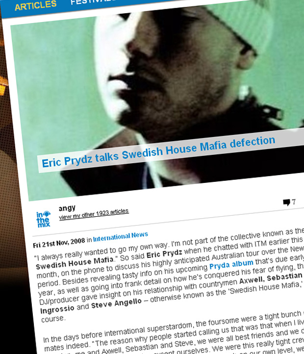
Eric Prydz: EPIC
22 August 2014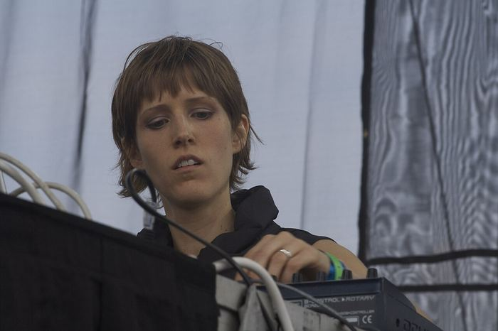
Kate Simko preps her London Electronic Orchestra
1 August 2014Anja Schneider’s Dubmission: “I’m making progressive music for the first time in my life”
28 July 2014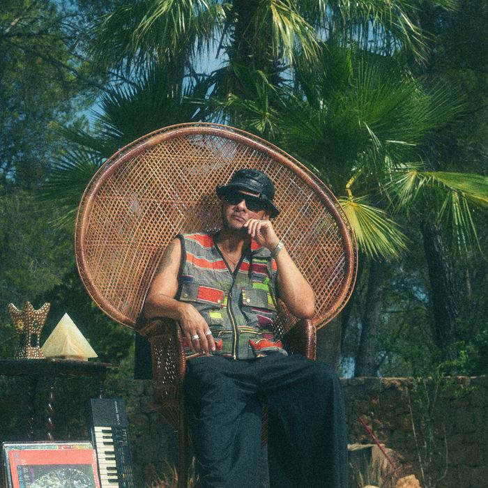
Nightmares on Wax: 25 years and the journey continues
15 July 2014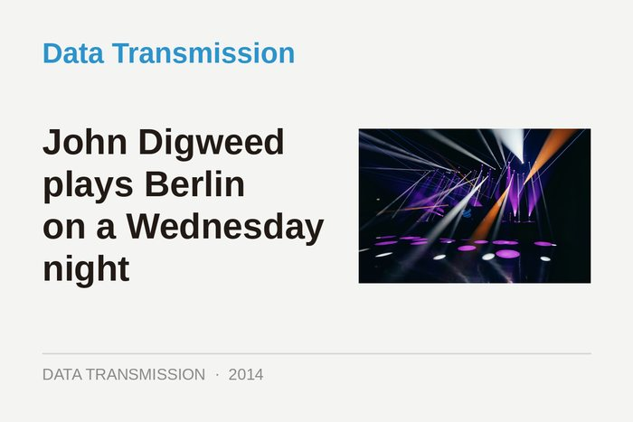
John Digweed plays Berlin on a Wednesday night
23 June 2014Detroit Swindle - Boxed Out
3 June 2014The different shades of Marc Romboy
25 April 2014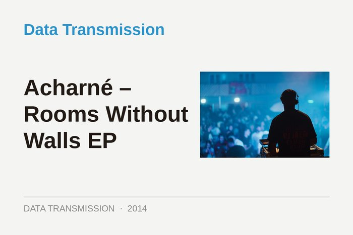
Acharné – Rooms Without Walls EP
14 April 2014Coyu: Kitties wanna dance in Ibiza
3 April 2014
Oliver Huntemann: Fünf Jahre in das Geschäft der Techno
23 January 2014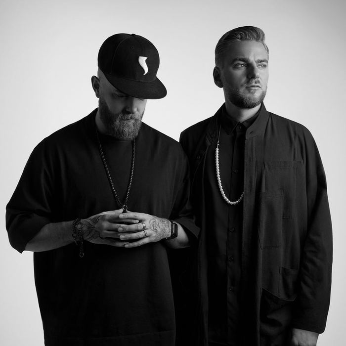
Showtek’s EDM evolution: “Oh man, we’re so glad we changed”
8 January 2014Hot Since 82: “Those are the moments when people really let themselves go in a club”
13 December 2013Seth Troxler: “Everyone is so fucking serious in dance music.”
21 November 2013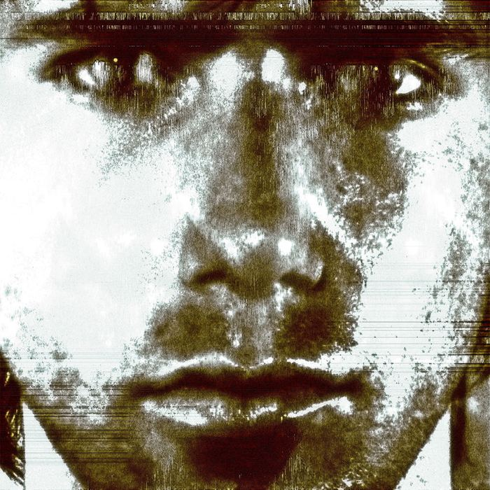
All night dancing with Tiga: “I wanted to make a record that someone like Loco Dice or Sasha could play”
25 October 2013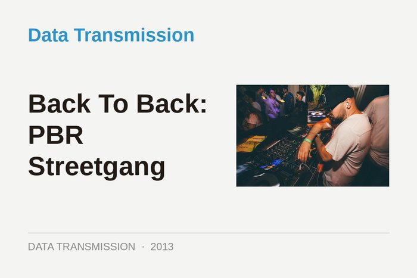
Back To Back: PBR Streetgang
15 October 2013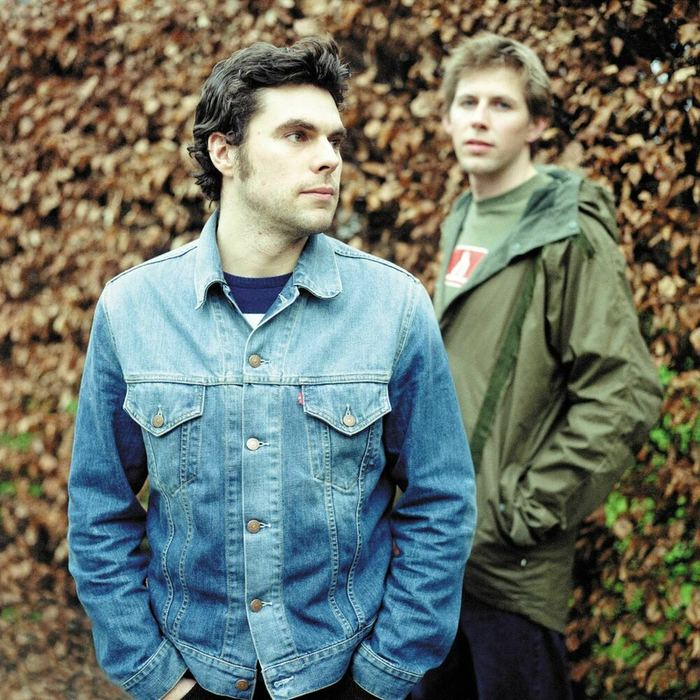
Groove Armada’s new era: “We’re happy being house DJs now”
4 October 2013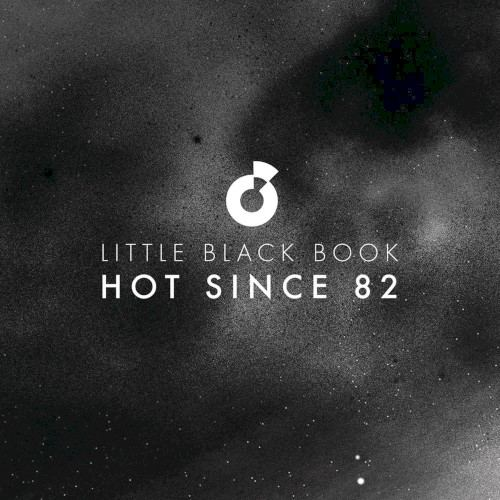
Hot Since 82 - Little Black Book
27 September 2013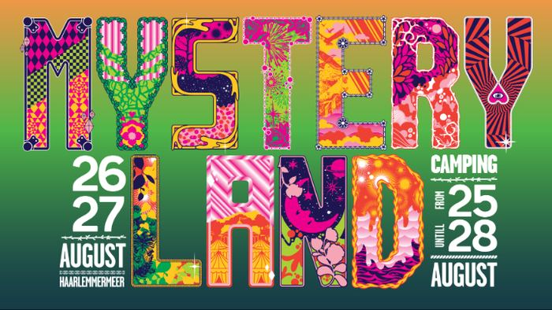
Lock N Load Events presents… Haunted House London
31 August 2013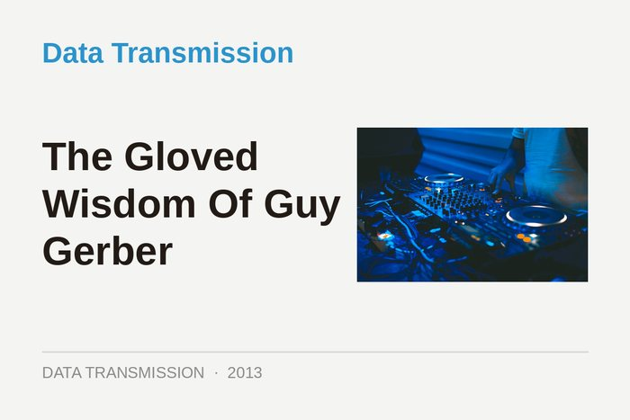
The Gloved Wisdom Of Guy Gerber
29 August 2013
An Afternoon With Nile Rodgers
3 July 2013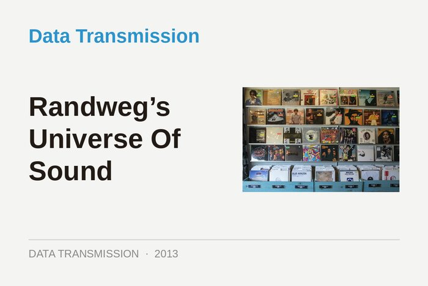
Randweg’s Universe Of Sound
22 May 2013